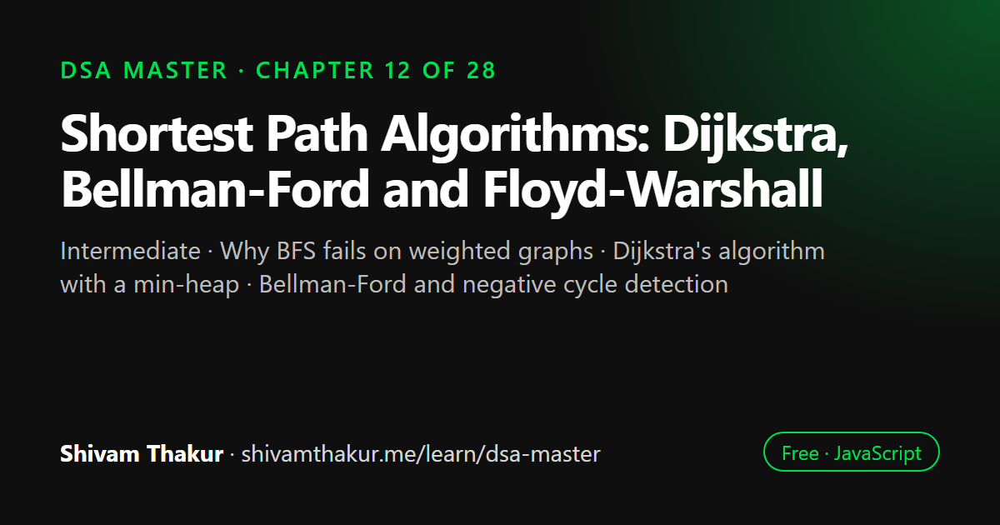

Chapter 12 of 28 · Intermediate
Shortest Path Algorithms: Dijkstra, Bellman-Ford and Floyd-Warshall
Shortest Path Algorithms — When Edges Have Weight

Shortest path algorithms find the cheapest route between vertices in a weighted graph. Dijkstra's algorithm is fastest for non-negative weights, Bellman-Ford handles negative weights and detects negative cycles, and Floyd-Warshall computes the distance between every pair of vertices. This chapter implements all three in JavaScript and gives a decision framework for choosing between them.
In this chapter you will learn
- Why BFS fails on weighted graphs
- Dijkstra's algorithm with a min-heap
- Bellman-Ford and negative cycle detection
- Floyd-Warshall all-pairs shortest paths
- Choosing the right shortest path algorithm
12.0 Why Plain BFS Isn't Enough Anymore
Chapter 11 closed with the single most important fact in graph traversal: BFS guarantees shortest path, but only in an unweighted graph. The moment edges carry different costs — travel time between cities, latency between servers, price of a flight — BFS's core guarantee collapses, because BFS's correctness relies entirely on "fewer edges visited so far = closer," which is meaningless once one edge might cost 1 and another might cost 1,000.
Why BFS Breaks on Weighted Graphs: A Concrete Counter-Example
A --1--> B --1--> D Path A->B->D: 2 edges, but weight 1+1 = 2
|
+--------10-------> D Path A->D directly: 1 edge, but weight 10!
BFS would explore the DIRECT A->D edge first (fewer edges = "closer" in BFS's
edge-counting sense), incorrectly reporting a "shortest path" of weight 10,
when a path through B, using MORE edges, actually has a smaller TOTAL weight (2).
BFS optimizes for FEWEST EDGES. Weighted shortest path needs to optimize for
SMALLEST TOTAL WEIGHT — a genuinely different quantity requiring new machinery.This chapter builds that new machinery: Dijkstra's algorithm (the workhorse for non-negative weights), Bellman-Ford (which correctly handles negative weights and detects negative cycles), and Floyd-Warshall (which finds shortest paths between every pair of vertices at once).
12.1 Dijkstra's Algorithm: Greedy Shortest Path With a Heap
12.1.1 The Core Intuition
Definition: Dijkstra's algorithm finds the shortest path from a single source vertex to all other vertices in a weighted graph with non-negative edge weights, by repeatedly selecting the unvisited vertex with the smallest known distance and "relaxing" (potentially improving) its neighbors' distances.
Real-Life Analogy: Filling a Reservoir From the Source Outward
Imagine water flowing outward from a source point, always expanding to whichever adjacent, not-yet-flooded point is currently closest to the source (measured by total distance traveled, not number of hops). Once a point gets flooded, its flood-arrival time is locked in as final — because water always expands from the currently-closest unflooded frontier next, there's no way a later, farther expansion could somehow represent a shorter route to an already-flooded point. This "always expand from the globally closest remaining frontier" behavior is exactly Dijkstra's greedy strategy, and it's why it works: once a vertex is finalized (popped as the current minimum), no future discovery can possibly offer it a shorter path, because every other path would have to go through a vertex that's currently farther away than the one just finalized — and traveling through something farther away can only add more distance, never less (this relies on non-negative weights — more on why that matters in section 12.2).
Why This Directly Needs Chapter 9's Heap
"Repeatedly select the unvisited vertex with the smallest known distance" is exactly Chapter 9's extractMin() operation. Using a plain array and scanning for the minimum every time would cost O(V) per selection, O(V²) total across all vertices — using a min-heap (Chapter 9) drops this to O(log V) per selection, the entire reason Dijkstra's algorithm is efficient in practice.
12.1.2 Full Implementation
function dijkstra(graph, startVertex) {
// graph: Map<vertex, Array<[neighbor, weight]>>
const distances = new Map();
const previous = new Map(); // for path reconstruction, exactly like Chapter 11's parent map
for (const vertex of graph.keys()) {
distances.set(vertex, Infinity);
}
distances.set(startVertex, 0);
const minHeap = new Heap((a, b) => a.distance - b.distance); // Chapter 9's generic Heap!
minHeap.insert({ vertex: startVertex, distance: 0 });
const visited = new Set();
while (minHeap.size > 0) {
const { vertex: current, distance: currentDistance } = minHeap.extract();
if (visited.has(current)) continue; // may have stale/duplicate entries — see note below
visited.add(current);
for (const [neighbor, weight] of graph.get(current) || []) {
if (visited.has(neighbor)) continue;
const newDistance = currentDistance + weight;
if (newDistance < distances.get(neighbor)) {
distances.set(neighbor, newDistance); // RELAXATION: found a better path!
previous.set(neighbor, current);
minHeap.insert({ vertex: neighbor, distance: newDistance });
}
}
}
return { distances, previous };
}Dry Run
Graph (weighted, directed for this example):
A -> [[B,4], [C,1]]
B -> [[D,1]]
C -> [[B,2], [D,5]]
D -> []
dijkstra(graph, 'A'):
Init: distances={A:0, B:Inf, C:Inf, D:Inf}, heap=[{A,0}]
Extract {A,0}. Not visited -> visited={A}.
neighbor B, weight 4: newDist = 0+4=4 < Inf -> distances={A:0,B:4,...}, heap gets {B,4}
neighbor C, weight 1: newDist = 0+1=1 < Inf -> distances={A:0,B:4,C:1,D:Inf}, heap gets {C,1}
heap now: [{C,1}, {B,4}] (min-heap keeps C on top)
Extract {C,1}. Not visited -> visited={A,C}.
neighbor B, weight 2: newDist = 1+2=3 < 4(current B distance!) -> IMPROVEMENT!
distances={A:0,B:3,C:1,D:Inf}, heap gets {B,3}
neighbor D, weight 5: newDist = 1+5=6 < Inf -> distances={...,D:6}, heap gets {D,6}
heap now: [{B,3}, {B,4}(STALE!), {D,6}]
Extract {B,3}. Not visited -> visited={A,C,B}.
neighbor D, weight 1: newDist = 3+1=4 < 6(current D distance!) -> IMPROVEMENT!
distances={A:0,B:3,C:1,D:4}, heap gets {D,4}
heap now: [{D,4}, {B,4}(STALE), {D,6}(STALE)]
Extract {D,4}. Not visited -> visited={A,C,B,D}.
D has no outgoing edges -> nothing to relax
Extract {B,4}(STALE). visited.has('B') is TRUE -> skip immediately.
Extract {D,6}(STALE). visited.has('D') is TRUE -> skip immediately.
Heap empty. FINAL distances: {A:0, B:3, C:1, D:4}
Verify: shortest A->D is A->C->B->D = 1+2+1 = 4 ✓ (NOT the direct-ish A->B->D = 4+1=5,
and NOT A->C->D = 1+5=6 — the algorithm correctly found the truly shortest route!)12.2 Bellman-Ford Algorithm: Slower, But Handles Negative Weights
Definition: The Bellman-Ford algorithm finds shortest paths from a single source to all vertices, correctly handling negative edge weights, by relaxing every edge in the graph, V-1 times, guaranteed to converge on correct shortest-path distances (or detect a negative cycle) by that point.
Dry Run (Abbreviated, Focusing on the Key Insight)
Graph edges: [A,B,4], [A,C,1], [C,B,2], [B,D,1], [C,D,5]
vertices = [A,B,C,D], start = A
distances = {A:0, B:Inf, C:Inf, D:Inf}
Pass 1 (relax all edges once, in listed order):
[A,B,4]: 0+4=4 < Inf -> B=4
[A,C,1]: 0+1=1 < Inf -> C=1
[C,B,2]: 1+2=3 < 4 -> B=3 (already improved this same pass!)
[B,D,1]: 3+1=4 < Inf -> D=4
[C,D,5]: 1+5=6, not < 4 -> no change
After pass 1: {A:0, B:3, C:1, D:4}
Pass 2 (V-1=3, so 2 more passes total needed; let's check pass 2):
[A,B,4]: 0+4=4, not < 3 -> no change
[A,C,1]: 0+1=1, not < 1 -> no change
[C,B,2]: 1+2=3, not < 3 -> no change
[B,D,1]: 3+1=4, not < 4 -> no change
[C,D,5]: 1+5=6, not < 4 -> no change
NOTHING improved -- we could stop early here (a common practical optimization),
but Bellman-Ford's guarantee holds regardless of running the full V-1 passes.
Final distances: {A:0, B:3, C:1, D:4} -- MATCHES Dijkstra's result from section 12.1.2!
(As expected: with no negative edges present, both algorithms agree — Bellman-Ford
is simply the safe, if slower, ALTERNATIVE that also works when negatives ARE present.)12.3 Floyd-Warshall: All-Pairs Shortest Paths
Both Dijkstra and Bellman-Ford solve single-source shortest paths — "shortest path from ONE specific starting vertex to everywhere else." Sometimes you need every pair's shortest path simultaneously — Floyd-Warshall answers exactly this.
12.3.1 The Core Intuition: Dynamic Programming Over Intermediate Vertices
Definition: The Floyd-Warshall algorithm computes shortest paths between all pairs of vertices by progressively considering each vertex as a potential intermediate stop on a path between every other pair, updating the shortest known distance whenever routing through that intermediate vertex helps.
Dry Run (Small Example)
Vertices: A(0), B(1), C(2)
Edges: A->B (3), B->C (1), A->C (10)
Initial dist matrix (rows/cols = A,B,C):
A B C
A [ 0, 3, 10 ]
B [Inf, 0, 1 ]
C [Inf, Inf, 0 ]
k=0 (A as intermediate): check if routing through A helps any (i,j)
dist[B][A] is Inf -> routing B->A->anything is useless (Inf + anything = Inf). No changes possible via A as intermediate for reaching FROM B or C, since nothing reaches A.
k=1 (B as intermediate): check if routing through B helps
dist[A][B]=3, dist[B][C]=1 -> dist[A][C] currently 10. Is 3+1=4 < 10? YES!
dist[A][C] = 4 <- IMPROVEMENT FOUND: A->B->C (cost 4) beats direct A->C (cost 10)!
Updated matrix:
A B C
A [ 0, 3, 4 ]
B [Inf, 0, 1 ]
C [Inf, Inf, 0 ]
k=2 (C as intermediate): check if routing through C helps
C has no outgoing edges (dist[C][anything] is Inf or 0) -> no further improvements possible
FINAL: dist[A][C] = 4 (correctly found the A->B->C shortcut, beating the direct edge!)12.4 Comprehensive Comparison and Decision Framework
The Complete Shortest-Path Decision Table
| Scenario | Algorithm | Complexity |
|---|---|---|
| Unweighted graph, single source | BFS (Chapter 11) | O(V + E) |
| Weighted graph, non-negative weights, single source | Dijkstra | O((V+E) log V) |
| Weighted graph, negative weights possible, single source | Bellman-Ford | O(V · E) |
| Need to detect negative cycles specifically | Bellman-Ford | O(V · E) |
| Weighted graph, need ALL pairs' shortest paths | Floyd-Warshall (or Dijkstra from every vertex, for large sparse graphs) | O(V³) (or O(V·(V+E)log V)) |
12.5 Edge Cases and Gotchas Checklist
- Unreachable vertices. Does your implementation correctly leave/report
Infinity(or a clear "unreachable" sentinel) for vertices with no path from the source, rather than crashing or returning a misleading value like0orundefined? - Negative weights with Dijkstra. Always verify the problem guarantees non-negative weights before reaching for Dijkstra; if unstated, ask or explicitly flag the assumption.
- Negative cycles with Bellman-Ford. Always run (or at least mention) the extra V-th verification pass — silently skipping it means your algorithm could return an incorrect "shortest path" for graphs with a negative cycle, when the correct answer is "undefined/unbounded."
- Self-loops and parallel edges (multiple edges between the same pair of vertices with different weights) — verify your relaxation logic naturally handles picking the smaller of duplicate edges (it does, automatically, since relaxation only ever accepts strict improvements).
- Floyd-Warshall loop order —
kmust be outermost; this is the single most common implementation bug in this chapter's final algorithm. - Directed vs. undirected weighted graphs — for undirected graphs, remember each edge must be added/relaxed in both directions (exactly as in Chapter 11's
addEdgewithdirected = false). - Path reconstruction — if a problem asks for the actual path (not just the distance), remember to track and use a
previous/parent map (section 12.1.2), reconstructing by walking backward once the algorithm completes, exactly mirroring Chapter 11's BFS path-reconstruction technique.
12.6 Chapter Summary
This chapter directly extended Chapter 11's graph traversal foundation into the weighted-edge world, opening with a concrete proof of exactly why BFS's shortest-path guarantee collapses the moment edges carry different costs — BFS optimizes for fewest edges, while weighted shortest path requires optimizing for smallest total weight, a genuinely different quantity. We built Dijkstra's algorithm as a direct, practical payoff of Chapter 9's heap: its greedy strategy of always finalizing the currently-closest unvisited vertex works specifically because non-negative weights guarantee that no future, farther-starting path could ever retroactively improve an already-finalized vertex's distance — and we were explicit and rigorous about the critical failure mode this creates: Dijkstra produces silently wrong answers on graphs with negative weights, since that exact non-retroactive-improvement assumption breaks down.
We introduced Bellman-Ford as the correct, if slower (O(V·E) versus Dijkstra's O((V+E) log V)), alternative for graphs where negative weights are possible, built on the elegant mathematical fact that no shortest path needs more than V-1 edges, making V-1 full edge-relaxation passes provably sufficient — and we highlighted its genuinely valuable bonus capability that Dijkstra has no equivalent for at all: a single extra relaxation pass serves as a complete negative-cycle detector, since any further improvement after the guaranteed-sufficient V-1 passes is only possible if a negative cycle allows a path's cost to be driven arbitrarily low. We closed the core algorithmic content with Floyd-Warshall, an all-pairs shortest-path algorithm built on a genuine dynamic-programming recurrence (a direct, concrete preview of the DP Masterclass chapters ahead) — "the shortest path from i to j using only vertices 0..k as intermediates" — and were careful to flag its single most common implementation bug: the intermediate vertex k must be the outermost loop, or the recurrence's "already improved using earlier intermediates" invariant silently breaks.
Finally, we assembled everything into a single, complete decision framework spanning both this chapter and Chapter 11: unweighted → BFS; weighted, non-negative → Dijkstra; weighted, negative weights possible → Bellman-Ford; all-pairs needed → Floyd-Warshall (or repeated Dijkstra for large sparse graphs) — a decision tree worth having ready to state, in order, the moment any shortest-path problem appears, since correctly identifying which algorithm the problem's constraints actually demand is a bigger interview differentiator than knowing any single algorithm's implementation in isolation.
12.7 Revision Notes
- BFS's shortest-path guarantee relies on "fewest edges = closest," which breaks entirely once edges carry different weights — a genuinely different optimization target.
- Dijkstra's greedy strategy (always finalize the current minimum, via Chapter 9's heap) is correct only because non-negative weights guarantee no future path can retroactively improve a finalized vertex — this assumption breaks with negative weights, producing silently wrong answers.
- Bellman-Ford relaxes every edge V-1 times (provably sufficient, since no shortest path needs more than V-1 edges), correctly handling negative weights, at O(V·E) cost.
- A single extra (V-th) Bellman-Ford relaxation pass detects negative cycles — any further improvement at that point is only possible via a negative cycle.
- Floyd-Warshall computes all-pairs shortest paths via a DP recurrence over intermediate vertices; the intermediate vertex
kmust be the outermost loop, or the "already improved via earlier intermediates" invariant breaks. - Decision framework: unweighted → BFS; weighted non-negative → Dijkstra; weighted with possible negatives → Bellman-Ford; all-pairs needed → Floyd-Warshall (or repeated Dijkstra for large sparse graphs).
12.8 Mind Map (ASCII)
SHORTEST PATH ALGORITHMS
|
+------------------+---------+---------+------------------------+
| | | |
WHY BFS FAILS DIJKSTRA BELLMAN-FORD FLOYD-WARSHALL
ON WEIGHTED | | |
GRAPHS Greedy: always Relax ALL edges DP over
(fewest edges finalize current V-1 times (proof: intermediate
!= smallest minimum via no shortest path vertices k
total weight) Ch.9 HEAP needs > V-1 edges) (k MUST be
| (extractMin) | OUTERMOST loop
Different | Handles NEGATIVE -- common bug!)
optimization FAILS on negative weights correctly |
target entirely weights (silently ("relaxation" = the O(V^3) time,
wrong, no error!) ONE operation shared O(V^2) space
O((V+E)logV) by ALL 3 algorithms) |
| | Best for: need
Non-negative Extra V-th pass = EVERY pair's
weights ONLY NEGATIVE CYCLE shortest path,
DETECTOR (Dijkstra small-medium
has NO equivalent!) graphs
O(V*E) time
|
DECISION FRAMEWORK: unweighted->BFS,
weighted+nonneg->Dijkstra,
weighted+maybe-negative->Bellman-Ford,
all-pairs->Floyd-Warshall12.9 Cheat Sheet
SHORTEST PATH DECISION TREE
==============================
1. Unweighted? -> BFS (Chapter 11), O(V+E)
2. Weighted, non-negative only? -> Dijkstra, O((V+E) log V)
3. Weighted, negative weights POSSIBLE? -> Bellman-Ford, O(V*E)
4. Need negative CYCLE detection? -> Bellman-Ford (extra V-th pass)
5. Need ALL-PAIRS shortest paths? -> Floyd-Warshall, O(V^3)
(or Dijkstra from every vertex
if graph is large & sparse)
DIJKSTRA
===========
Greedy: extractMin from a heap (Ch.9), relax neighbors, repeat.
FAILS SILENTLY on negative weights -- always check for this precondition!
Time: O((V+E) log V) with a binary heap.
BELLMAN-FORD
===============
Relax EVERY edge, V-1 times (provably sufficient — no shortest path > V-1 edges).
Run ONE more pass: if anything still improves -> NEGATIVE CYCLE exists.
Time: O(V*E). Handles negative weights correctly.
FLOYD-WARSHALL
=================
for k in vertices: <- MUST be outermost loop!
for i in vertices:
for j in vertices:
dist[i][j] = min(dist[i][j], dist[i][k] + dist[k][j])
Time: O(V^3). Space: O(V^2). All-pairs shortest paths in one run.
RELAXATION (the ONE operation underlying all three algorithms)
===================================================================
if dist[u] + weight(u,v) < dist[v]:
dist[v] = dist[u] + weight(u,v) <- found a shorter path, update it12.10 Key Takeaways
- BFS's shortest-path guarantee is specifically about fewest edges — it collapses entirely once weights differ, requiring genuinely new algorithms.
- Dijkstra (heap-powered, O((V+E) log V)) is correct only for non-negative weights — it fails silently, not loudly, on negative weights, making this precondition check essential.
- Bellman-Ford (O(V·E)) correctly handles negative weights via V-1 relaxation passes, and its extra V-th pass is a complete, elegant negative-cycle detector Dijkstra has no equivalent for.
- Floyd-Warshall (O(V³)) computes all-pairs shortest paths via a DP recurrence over intermediate vertices — the intermediate vertex must be the outermost loop.
- A complete decision framework (unweighted→BFS, non-negative→Dijkstra, possibly-negative→Bellman-Ford, all-pairs→Floyd-Warshall) is worth having ready to state explicitly for any shortest-path problem.
12.11 20 Multiple Choice Questions
Tap an answer to check it. Your score updates as you go.
Score: 0 / 0 answered (20 questions)
Why does BFS fail to guarantee shortest paths in a weighted graph?
What data structure from Chapter 9 does Dijkstra's algorithm rely on for efficiency?
What critical assumption does Dijkstra's greedy strategy depend on?
What happens when Dijkstra's algorithm is run on a graph with negative edge weights?
What is the time complexity of Dijkstra's algorithm using a binary heap?
What operation is shared by Dijkstra, Bellman-Ford, and Floyd-Warshall as their fundamental building block?
How many times does Bellman-Ford relax every edge in the graph?
Why is V-1 the correct number of relaxation passes in Bellman-Ford?
What does an extra (V-th) relaxation pass in Bellman-Ford detect if it still finds improvements?
What is the time complexity of Bellman-Ford?
What is the primary advantage of Bellman-Ford over Dijkstra?
What problem does Floyd-Warshall solve that Dijkstra and Bellman-Ford do not directly address?
In Floyd-Warshall's triple nested loop, which loop variable must be outermost?
Why must the intermediate vertex
kbe the outermost loop in Floyd-Warshall?What is the time complexity of Floyd-Warshall?
What is the space complexity of Floyd-Warshall?
According to this chapter's decision framework, which algorithm should you use for a weighted graph where negative weights are impossible?
According to this chapter's decision framework, which algorithm(s) should you use if you need shortest paths between EVERY pair of vertices in a large, sparse graph?
Why does the Dijkstra implementation in this chapter check
if (visited.has(current)) continue;after extracting from the heap?What must be tracked to reconstruct the actual shortest PATH (not just its total distance) after running any of these algorithms?
Show the answer key
1-b, 2-b, 3-b, 4-b, 5-b, 6-b, 7-b, 8-b, 9-b, 10-b, 11-b, 12-b, 13-c, 14-b, 15-c, 16-b, 17-b, 18-c, 19-a, 20-b
12.12 20 Coding Problems
Easy
- Implement Dijkstra's algorithm from memory (section 12.1.2), testing it on a small hand-constructed weighted graph.
- Write a function to reconstruct the shortest path (not just distance) from Dijkstra's
previousmap. - Given a weighted graph, write a function to find the shortest distance between two SPECIFIC vertices (early-exit Dijkstra once the target is extracted from the heap).
- Implement Bellman-Ford from memory (section 12.2), and verify it produces the same distances as Dijkstra on a graph with no negative weights.
- Write a function to detect if a given graph contains a negative-weight cycle, using Bellman-Ford's extra pass.
Medium
- Implement Floyd-Warshall from memory (section 12.3.1), being careful about the loop order, and verify against a hand-computed small example.
- Given a weighted graph representing flight routes with prices, find the cheapest route from a source to a destination with at most K stops (a variant requiring a modified Bellman-Ford-style relaxation limited to K passes).
- Given a graph, implement a function that returns the shortest path distances from a source to ALL other vertices, explicitly reporting
Infinity/unreachable for disconnected vertices. - Given a road network with tolls (weights), find the path from A to B that minimizes total toll cost, and separately, the path that minimizes the NUMBER of toll roads used (contrasting Dijkstra with plain BFS on the same graph).
- Implement a function that uses Floyd-Warshall's result matrix to determine the "diameter" of a weighted graph (the largest shortest-path distance between any pair of vertices).
Hard
- Given a graph where some edges may be negative but the graph as a whole has no negative cycles, implement Bellman-Ford to find shortest paths, and write a function that also returns the actual path for a specified destination.
- Given a currency exchange graph (currencies as vertices, exchange rates as edges, where the "weight" is the negative log of the rate for arbitrage-detection purposes), use Bellman-Ford's negative-cycle detection to determine if a profitable arbitrage opportunity exists.
- Given a grid where each cell has a "cost" to enter, find the minimum-cost path from the top-left to the bottom-right corner using Dijkstra treating the grid as an implicit weighted graph (a direct combination of Chapter 11's implicit-graph technique with this chapter's weighted algorithms).
- Implement a network delay time calculator: given a list of weighted directed edges representing signal travel times between network nodes, determine the minimum time for a signal starting at a given node to reach all other nodes, using Dijkstra.
- Given a graph with both positive and negative edges (but no negative cycles), and a requirement to answer MANY shortest-path queries between different pairs efficiently, discuss (in comments) why running Floyd-Warshall ONCE upfront is more efficient than running Bellman-Ford separately for each query, then implement the Floyd-Warshall version.
Interview Level
- (Google-level) Given a graph representing a computer network with latencies as weights, design a system to find the K shortest paths (not just the single shortest) between two nodes, extending Dijkstra's approach conceptually (full K-shortest-paths algorithms are advanced, but discuss the approach in comments).
- (Amazon-level) Given a delivery network with travel times (weighted, non-negative) between warehouses, implement Dijkstra to find the fastest delivery route from a central warehouse to all destination warehouses, and report which destinations are unreachable.
- (Microsoft-level) Given a graph representing task dependencies where edges have "cost" representing time delays, and possibly negative weights representing time savings from parallelization, use Bellman-Ford to compute the fastest possible completion time for each task, detecting if the dependency structure creates an impossible (negative cycle) scenario.
- (Meta-level) Given a social network graph with weighted edges representing "interaction strength" (used as a cost to minimize, e.g., for finding the path of least resistance for information spread), implement Dijkstra to find the most efficient path between two users, and Floyd-Warshall to precompute all pairwise efficient paths for a smaller, frequently-queried subset of "VIP" users.
- (Netflix-level) Design a CDN (content delivery network) routing system: given server nodes with weighted latency edges, use Dijkstra to route each user request to the server offering the lowest end-to-end latency, and discuss (in comments) how you'd efficiently recompute routes as network conditions (edge weights) change dynamically in production.
12.13 5 Interview Questions
- "Why doesn't BFS work for finding the shortest path in a weighted graph?" (Tests understanding of the fundamental optimization-target mismatch.)
- "Walk me through Dijkstra's algorithm, and tell me what assumption it depends on that could break it." (Tests both implementation knowledge and the critical non-negative-weights precondition.)
- "How would you find the shortest path in a graph that might have negative edge weights?" (Tests knowledge of Bellman-Ford as the correct pivot.)
- "How would you detect a negative-weight cycle in a graph?" (Tests the elegant extra-pass technique specific to Bellman-Ford.)
- "How would you find the shortest path between every pair of vertices in a graph?" (Tests Floyd-Warshall knowledge and the trade-off against repeated Dijkstra.)
12.14 3 Real Projects
- Complete Shortest-Path Library: Build a module implementing Dijkstra, Bellman-Ford, and Floyd-Warshall against a shared weighted-graph representation, with a self-check script verifying all three agree on graphs with non-negative weights, and that Bellman-Ford correctly detects an intentionally-inserted negative cycle.
- Road Trip Planner: Build a Node.js CLI tool that models a small set of cities and travel times/costs as a weighted graph, then uses Dijkstra to find the cheapest/fastest route between any two cities the user specifies, printing the full path via the
previous-map reconstruction technique. - Currency Arbitrage Detector: Build the currency-exchange arbitrage detector from coding problem #12 as a standalone tool, using real or simulated exchange rate data, applying the negative-log-weight transformation and Bellman-Ford's negative-cycle detection to report any arbitrage opportunities found.
12.15 Further Reading
- Edsger Dijkstra's original 1959 paper, for the historical origin of the algorithm bearing his name.
- Search "Fibonacci heap Dijkstra" for the theoretically optimal (though rarely implemented in practice) O(E + V log V) variant using a more sophisticated heap supporting true decrease-key operations.
- Search "Bellman-Ford SPFA optimization" (Shortest Path Faster Algorithm) for a common practical optimization reducing Bellman-Ford's average-case runtime using a queue-based relaxation order.
- Robert Floyd and Stephen Warshall's original papers, for the historical, independently-discovered origins of the all-pairs algorithm bearing both their names.
- LeetCode's "Dijkstra" and "Shortest Path" adjacent problems (e.g., "Network Delay Time," "Cheapest Flights Within K Stops"), for extensive additional practice directly extending this chapter's core algorithms.
Shortest Path: frequently asked questions
Why doesn't Dijkstra's algorithm work with negative weights?
Dijkstra finalizes a vertex as soon as it is taken from the heap, assuming no later path can be cheaper. A negative edge can break that assumption, so Dijkstra may silently return wrong distances. Use Bellman-Ford instead.
What is the time complexity of Dijkstra's algorithm?
With a binary heap, Dijkstra runs in O((V + E) log V) time, where V is the number of vertices and E the number of edges.
When should I use Floyd-Warshall?
Use Floyd-Warshall when you need shortest distances between all pairs of vertices on a small graph. It runs in O(V³) time and is simple to implement with three nested loops.
Which shortest path algorithm should I choose?
Unweighted graph: BFS. Non-negative weights: Dijkstra. Negative weights or a need to detect negative cycles: Bellman-Ford. All pairs on a small graph: Floyd-Warshall.